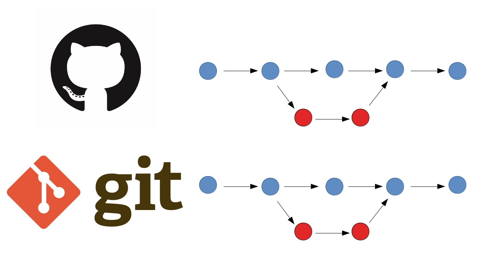
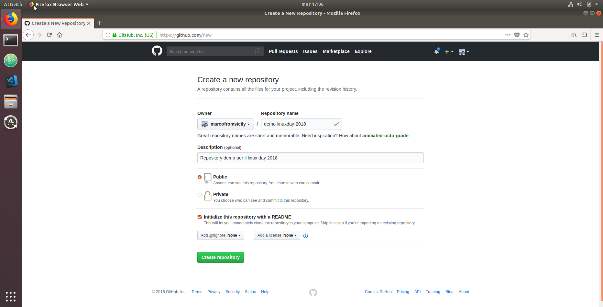

Marco Lombardo
Git e GitHub, come rompere il ghiaccio
Git e GitHub,
rompere il ghiaccio
Marco Lombardo
Marco Lombardo
Industria
LibrERP
Git

Github
Gitlab
Atom

Git clone
Git status
Git add
Git commit
Git log
Git push
Git diff
Git show
Git branch
Git checkout
Git merge
Git branch -d
Git push --set-upstream origin nomeramo
Pull request
Merge
Git pull
GitHub Page
GitHub Desktop
Udacity Git
Amazon Git
Youtube Git
Marco Lombardo